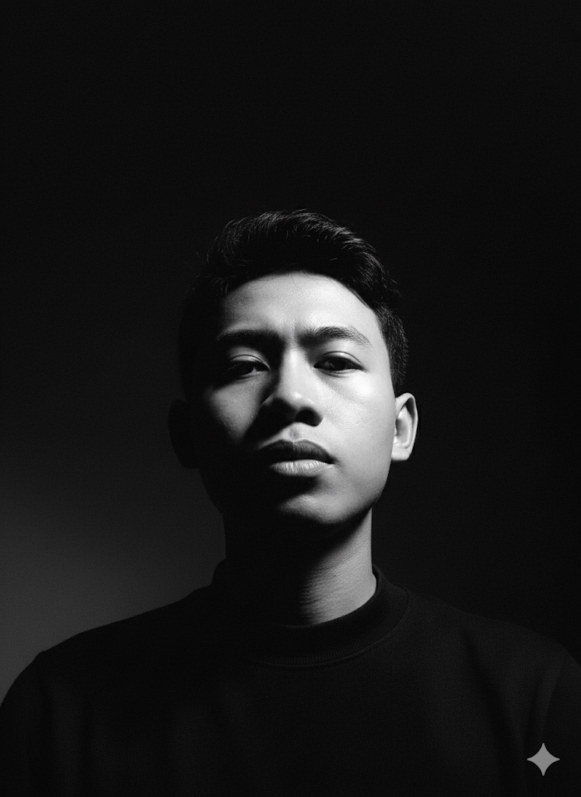
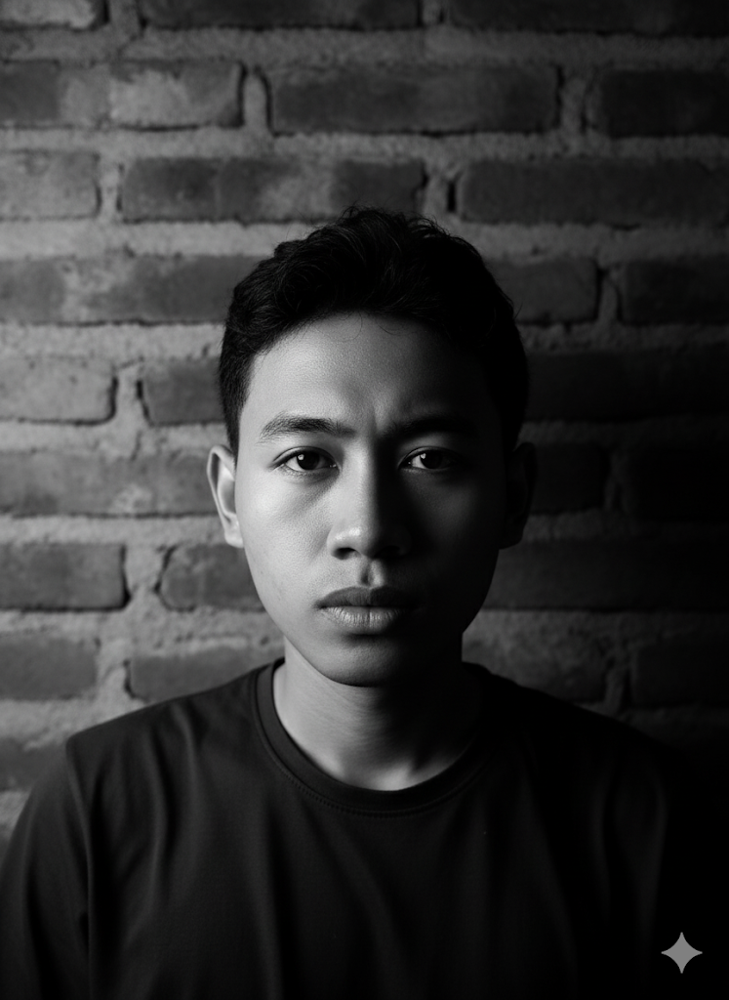

Membawa Fondasi IT & Dukungan Teknis untuk Inovasi Digital.
Lulusan S.Kom yang menguasai Jaringan, Troubleshooting, dan Pemeliharaan Sistem. Berfokus pada keandalan sistem dan efisiensi operasional. Siap mendukung infrastruktur perusahaan Web3 dengan pemahaman teknologi AI dan kesiapan belajar yang tinggi.
Tentang Saya
Saya adalah Lulusan S1 Teknologi Informasi (S.Kom) dari Universitas Bina Sarana Informatika. Saya memiliki fokus kuat pada Infrastruktur IT, pemeliharaan sistem, dan pengembangan front-end dasar. Secara teknis, saya menguasai Fundamental Jaringan, Analisis Masalah, dan tools pendukung IT. Saya juga berkomitmen untuk memanfaatkan Kecerdasan Buatan (AI) guna meningkatkan efisiensi kerja. Soft skill saya mencakup Komunikasi yang baik, Problem Solving, dan Kolaborasi Tim, sangat penting untuk peran support dan operasional.
Keahlian Teknis & Operasional
Pengalaman Kerja & Magang
Magang: Dukungan Infrastruktur di UPSPLL DISHUB
Bertanggung jawab atas Pemeliharaan dan Monitoring sistem jaringan, serta memberikan dukungan teknis kepada tim IT dalam menjaga keandalan infrastruktur.
Skripsi: Perancangan Program Manajemen Reservasi Web
Pengembangan sistem front-end dan back-end dasar untuk efisiensi data, menunjukkan kemampuan Full Stack Awareness dan manajemen proyek.
AI Crypto Analyzer
website ini dibuat dengan tujuan mempermudah trader pemula dalam melakukan analisa market
Sertifikasi & Pencapaian Utama
Sertifikasi BNSP Pengembang Perangkat Lunak
Kompeten dalam proses Software Development Life Cycle (SDLC) dengan kualifikasi Analis Program.
Sertifikasi Network Security (Cisco)
Pemahaman mendalam tentang keamanan jaringan, penting untuk lingkungan IT manapun, termasuk Web3.
Portofolio Web (Demonstrasi Front-End)
Dibuat menggunakan HTML, CSS, JS, menunjukkan kemampuan belajar cepat dan implementasi dasar web development.
Sertifikasi Kemampuan Bahasa Inggris (TOEFL)
Lolos tes kemampuan bahasa Inggris, mendukung komunikasi di lingkungan kerja internasional (Web3).
Sertifikasi Microsoft Office Specialist
Menguasai aplikasi Microsoft Office untuk efisiensi administrasi dan pengolahan data, vital untuk operasional.
Sertifikasi SEO & Content Writing
Meningkatkan visibilitas digital dan kemampuan membuat konten informatif, relevan untuk Technical Writer atau Community Manager.
Mari Terhubung
Saya antusias untuk mempelajari peluang di berbagai peran Dukungan, Operasional, atau Administrasi di perusahaan Web3. Silakan hubungi saya:
WhatsApp: +62 857 1104 2402
LinkedIn: Muhamad Nur Saifuddin
Email: mnsaifuddin68@gmail.com